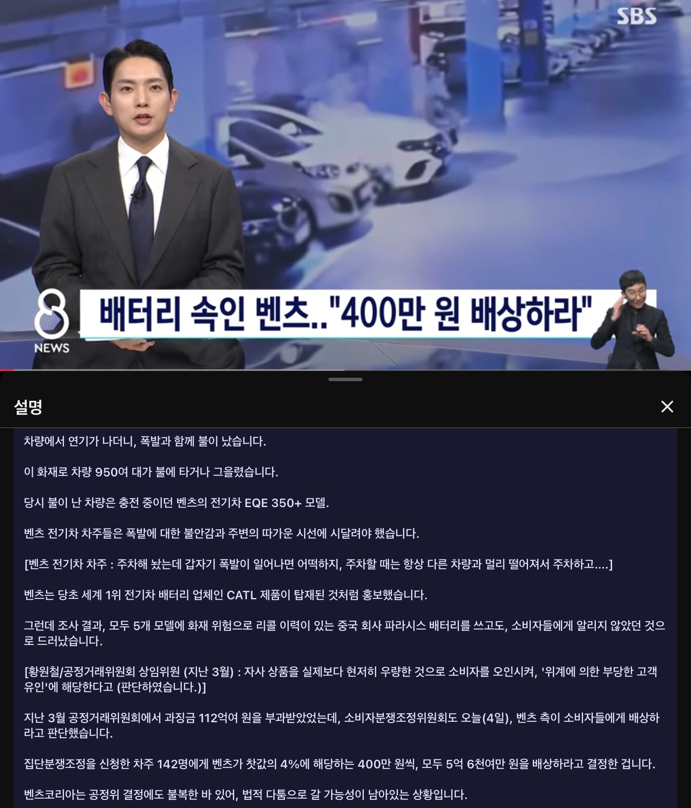

이제 재판가면 10년뒤에 촤종 판결 볼수있겠네

이제 재판가면 10년뒤에 촤종 판결 볼수있겠네
400??? 뭐하나 수리할적마다 수십, 수백은 그냥 눈탱이 치는놈들이 ㄷㄷ 4000은 줘야하는거 아니냐
4억은 줘야함
벤츠차주에게 사백만원이 얼마나 되겠나
약 사백만원의 가치가 있음
배터리가 전기차 가격에서 차지하는 비중이 얼만데 딸랑 400주고있네
이럴줄 알고 쏘렌토 하브 풀옵 샀다!
다른 이야기 지만 짱츠는 진짜 요즘 너무한거 같더라
오일필터 하우징 5년전꺼랑 지금 신차꺼랑 비교하면 재질의 차이가 너무 많이 남
오일류의 오링도 딱 봐도 오래 못버티게 생겼고...
그래도 cle 53은 대기가 1년이던데....
수출용은 다르게 만드는게 아니었음?
ㅋㅋㅋㅋ 400이면 감가상각비도 안나오겠네
지하철도 부정승차가 배임사유로 30배 물리는데 1.2억은 줘야자
잘나가는 독일 모범생이 목욕탕에서 비누를 줍는데 항문에 시진핑이 그려저있는건가?
벤츠 딱 2021년까지 타기 조아 그이상 다른차
속여놓고 400만원으로 퉁치는거면 사실상 벤츠가 웃는거 아닌가